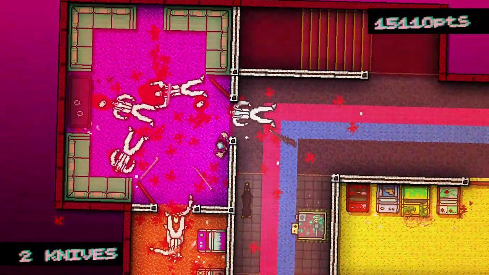
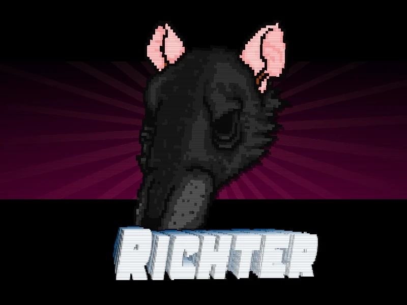
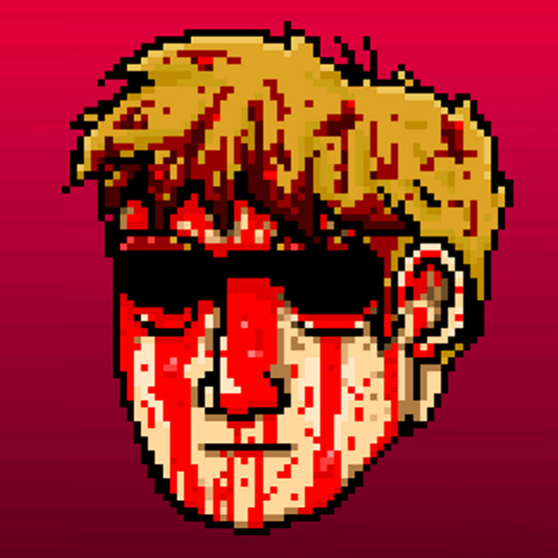
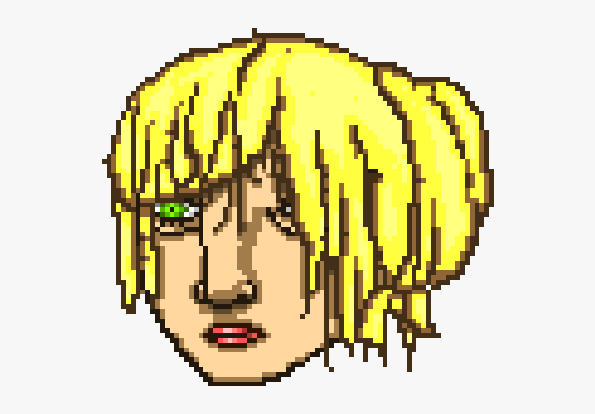

Hotline Miami is a 2012 top-down shooter game developed by Dennaton Games and published by Devolver Digital for Windows. The game is set in 1989 Miami, and revolves primarily around an unnamed silent protagonist—dubbed "Jacket" by fans—receiving coded messages on his answering machine instructing him to commit massacres against the local Russian mafia. The gameplay blends a top-down perspective with stealth, and the story features extreme violence and surreal storytelling, along with a soundtrack and visuals inspired by 1980s culture. The game was developed as a spiritual successor to a cancelled game from 2004 referred to as Super Carnage, where the goal was to kill as many people as possible. The game was developed within a nine month span and released on 23 October 2012 for Windows. In 2013, the game was ported to OS X and Linux on 18 March and 9 September respectively, while Abstraction Games ported the game to the PlayStation 3 and PlayStation Vita on 25 June, and PlayStation 4 on 19 August 2014.

The gameplay and style of Hotline Miami are demonstrated here.
You can see the bright and bloody aesthetics of the game, which is presented in 2D and with a top view.
He is one of the assassins hired by the mysterious organization "50 Blessings". Richter is trying to save his girlfriend, who was abducted by this organization. His story is closely connected with the events taking place in the first part of the game.

Richter
He is a journalist who investigates the organization "50 Blessings" and its connection with violence. Evan is trying to find the true truth and expose the corrupt world of the game.

Evan Wright
She is a low-ranking member of the organization "50 Blessings" and is not against any violent acts. Ash pursues his own goals and does not strive for noble ideals. His story is also connected with the events of the first part of the game.

Ash Davis
He works as a policeman and tries to overcome his inner demons. Mark does not know about the real motives and goals of the organization "50 Blessings", but they are found in his investigations.